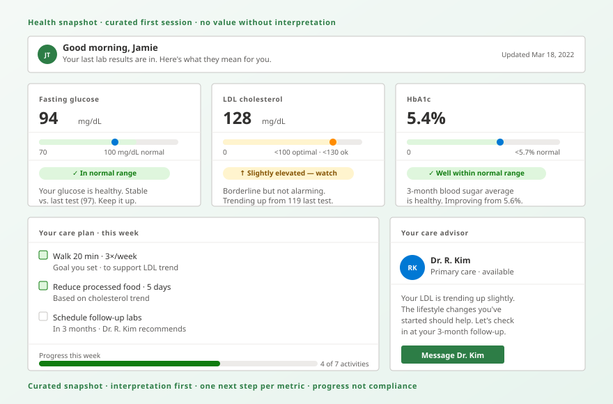

VVita HealthCase study · Healthcare · 3-year UX engagement
Vita Health. Patient journey for preventative care.
A working hi-fi prototype reconstructing the patient-journey patterns from a 3-year UX Lead engagement at Onlife Health (Vita-branded preventative care app on the AlwaysOn® member experience, 2019–2022). Built entirely on the Peter Tak Design System with a sage theme override — every screen composes the system's organisms, molecules, and atoms. ML/AI logic is visual only; the design surfaces are functional.

Reference artifact · Health snapshot — curated first session · no value without interpretation
The product bet
Most chronic conditions are preventable if caught and addressed early. The primary barrier isn't access — it's engagement. Most people who get annual labs don't understand their results; most people who get "eat better and exercise more" don't know where to start. Vita's product closed those two gaps: data → understanding, and understanding → action. My job for three years was to design those two transitions and make them coherent across multiple product versions.
Screens in the prototype
Eight working surfaces. Navigate between them using the in-app nav once you enter — every screen links to every other.
Building the screens above surfaced nine first-class components the base system was missing. Each is documented as a Beta entry in the system, with anatomy, when-to-use, and rules baked into the API.
All patient data, recommendation copy, advisor messages, and lab values shown are fictional. The screens demonstrate UX patterns from the engagement, not real clinical content. Onlife Health (now Pager Health) account details are abstracted under engagement constraints.